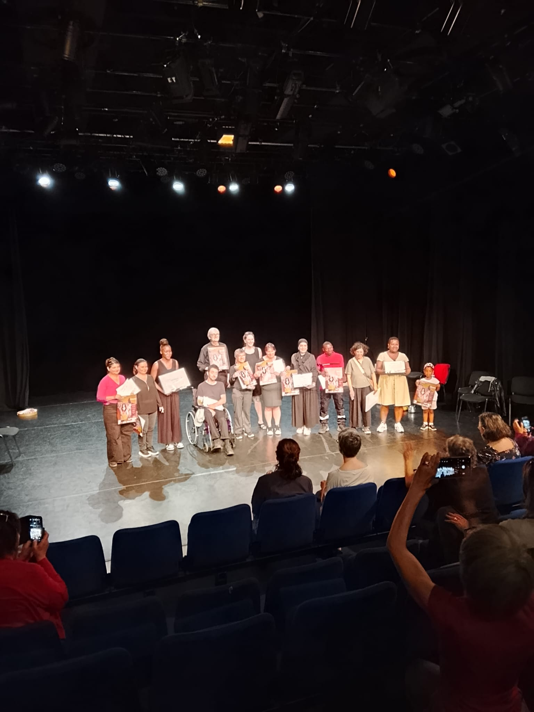
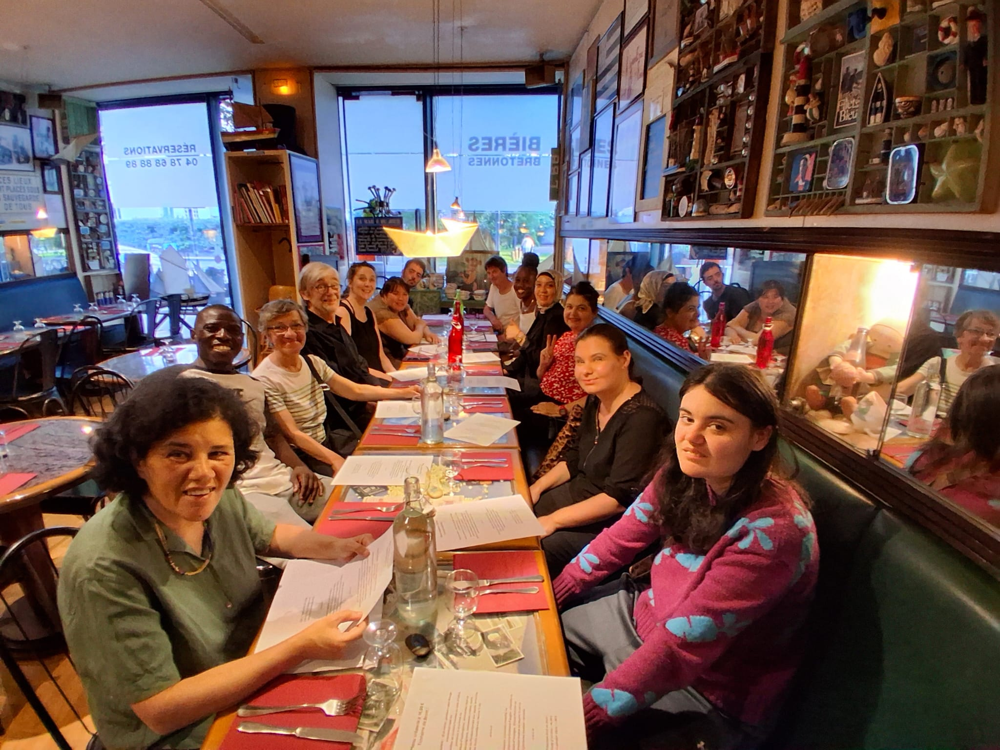

Ce questionnaire nous aide à comprendre ce que le programme En Scène vous a apporté. Il n’y a pas de bonne ou de mauvaise réponse : vous pouvez répondre avec vos mots, simplement.


Après l’envoi, vos réponses seront transmises via Formspree.